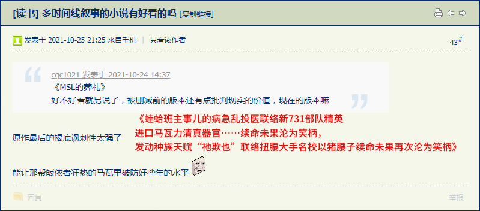

前一篇
目录
后一篇
主页
［
20211026
］向划时代大作《傻哔绿人的葬礼》致敬的跟风小品《北京三零幺医院的清真葬礼与中牟信阳马瓦力如丧考妣》
实体出版物腰封：“谨以此文，告慰钟海源聂树斌等卡菲勒受害者的在天之灵”
前情提要：
“蛙蛤班主事儿的所罗门可汗续命有望，塔利班马瓦力垂死挣扎”
报道出现偏差已经很久了，从没见着有哪个组织或个人宣布对这堆烂事负责
扭腰大手名校：“快去给所罗门可汗续命哼哼哈兮”

2021-10-26 03:53:14